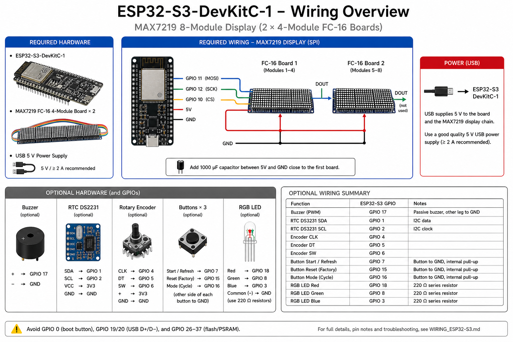

See it in action
Showing the live countdown, urgent mode animation, and Walk / Bike alternation.


A real-time departure countdown that tells you exactly when to leave home — live from the Dutch Railways API, shown on a dot-matrix display.
Showing the live countdown, urgent mode animation, and Walk / Bike alternation.
Everything runs on the device — no cloud backend, no app required.
Counts down to your leave time, updated every second. Automatic DST handling for Amsterdam timezone.
Alternates between Walk and Bike countdowns every 5 seconds. Switch modes instantly with one button or via the web UI.
Under 60 seconds to leave: animated walk or cycle icon replaces the destination and the timer flashes.
NS API is polled every 2 minutes on a FreeRTOS background task — the display never freezes.
Configure everything from any browser on your local network. No app, no reflash needed.
CORS-enabled JSON endpoints for Home Assistant, Node-RED, or any smarthome platform.
WiFi and NS API key stored in ESP32 NVS flash — never hardcoded in source.
Full test suite runs on your desktop with pio test -e native — no hardware required.
Minimal build — just three parts to get started.
From boot to countdown in under 30 seconds.
On boot the ESP32 connects to WiFi, syncs time via NTP (Amsterdam TZ, DST-aware), and starts the async web server.
A FreeRTOS background task polls the NS Reisinformatie API every 2 minutes and caches up to 10 upcoming departures.
Every second: leave time = departure − travel time − buffer. Uses the next valid, uncancelled train on your planned schedule.
The LED matrix shows destination · countdown · mode icon. At <60 s an animated icon appears. Buzzer and RGB LED fire at configurable thresholds.

You need PlatformIO and a free NS API key — that's it.
Get a free NS API key at apiportal.ns.nl — subscribe to Reisinformatie API.